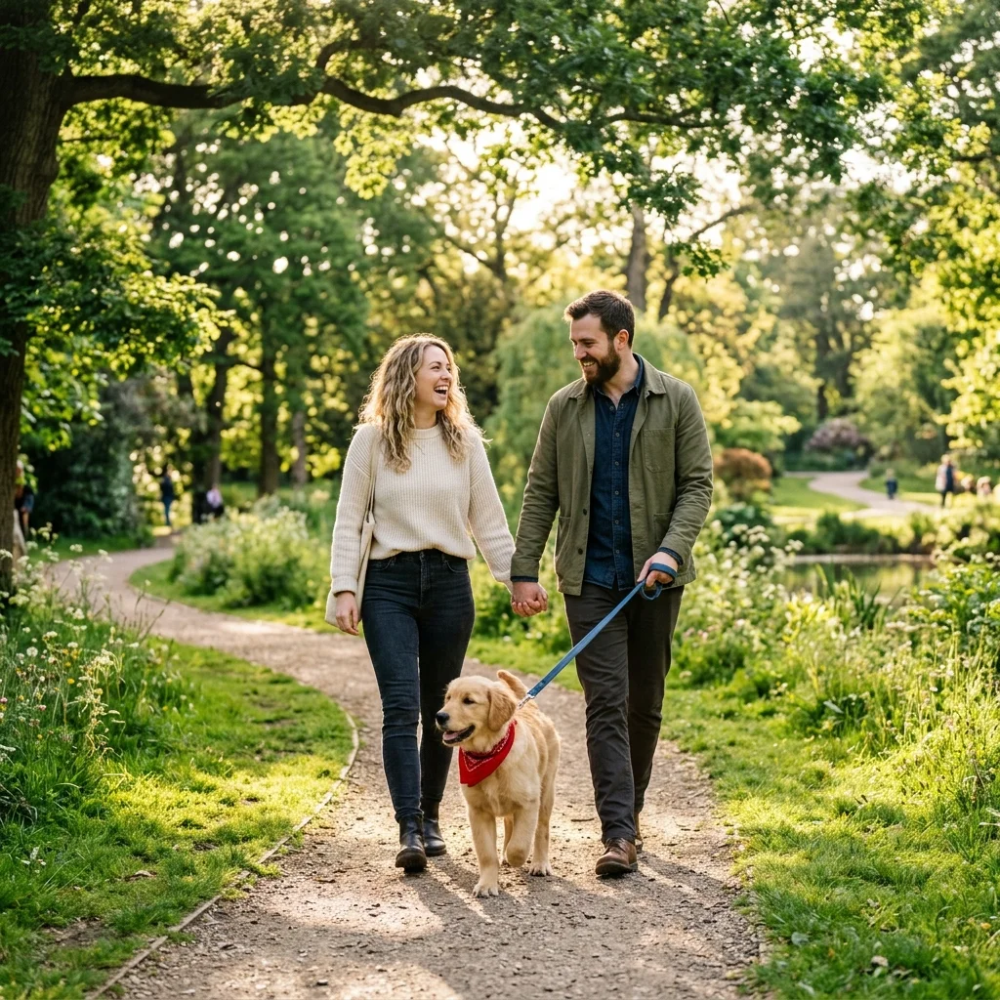
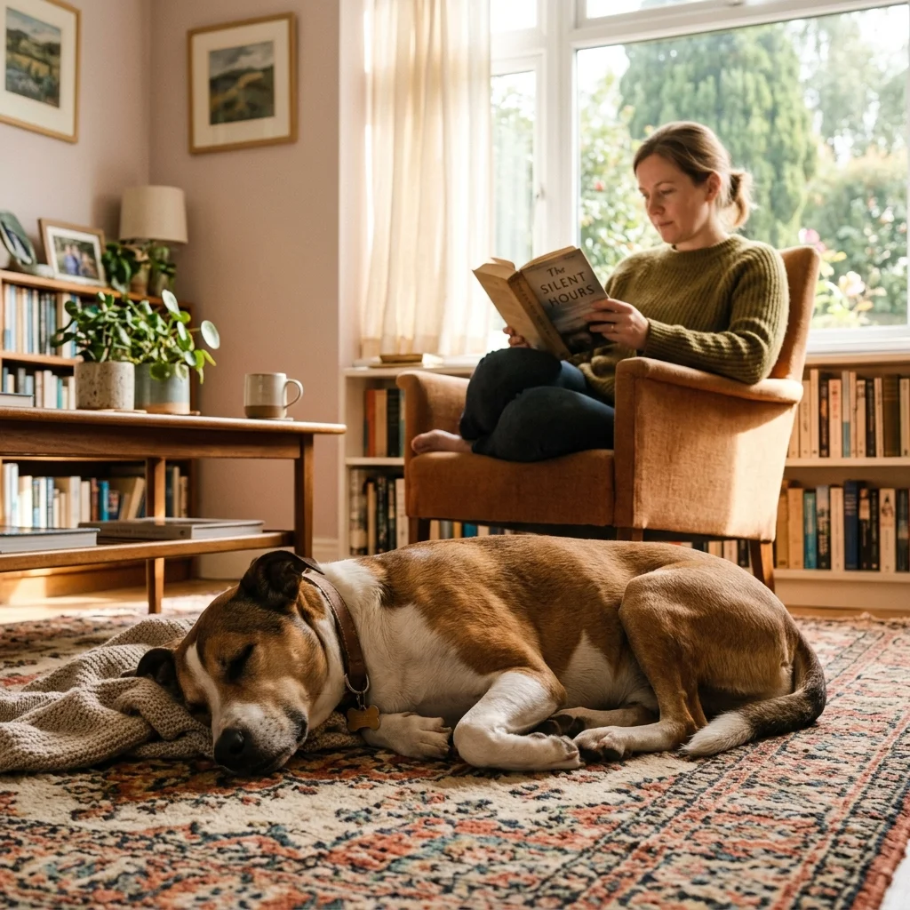

Adoptar un perro por primera vez: qué debes saber antes de decidir
Adoptar un perro es un acto de generosidad, pero también una responsabilidad que cambiará tu vida por completo. Antes de dejarte llevar por la emoción, es vital analizar si tu estilo de vida es compatible con sus necesidades.
Todo lo que necesitas cuestionarte antes de adoptar: desde el tiempo y el presupuesto hasta la elección entre un cachorro o un perro adulto. Tomar una decisión informada garantiza una vida feliz para ambos.

El compromiso: ¿estás listo para 15 años de compañía?
El primer factor es la visión a largo plazo. Un perro puede vivir 15 años o más. Durante este tiempo, tú serás su mundo entero. Tus vacaciones, mudanzas y rutinas laborales tendrán que adaptarse a sus necesidades.
Antes de dar el paso, pregúntate si estás dispuesto a asumir este nivel de compromiso incondicional, incluso en los días donde estés cansado o enfermo.
Recursos necesarios: tiempo, espacio y presupuesto
Tiempo
Los perros son animales sociales que necesitan interacción, ejercicio y educación diaria. Si pasas 10 horas fuera de casa y no tienes apoyo, la adopción podría derivar en problemas de conducta por soledad.
Presupuesto
Debes considerar gastos constantes: alimentación de calidad, vacunas anuales, prevención de parásitos y un fondo de emergencia médica para imprevistos.
Espacio
Puedes adoptar viviendo en un apartamento pequeño. Lo importante no es el tamaño de tu casa, sino la calidad del ejercicio físico y mental que le brindes diariamente al aire libre.
Cachorro vs. Adulto: ¿cuál encaja mejor contigo?
Al adoptar, considera si prefieres un cachorro, que requiere educación intensa desde cero, o un adulto, cuyo tamaño y personalidad ya están definidos.
La importancia de conocer su historia
Los refugios conocen bien a sus animales. Un perro adulto suele facilitar la adaptación en hogares que buscan más tranquilidad, ya que sus niveles de energía son más predecibles. Un cachorro es una "pizarra en blanco", pero requiere un nivel de vigilancia y tiempo exponencialmente mayor.

Preguntas Frecuentes (FAQ)
¿Cuánto cuesta mantener un perro adoptado?
Varía según el tamaño, pero incluye comida de calidad, visitas veterinarias anuales, desparasitación mensual y posibles imprevistos. Debes tener un presupuesto mensual estable asignado para él.
¿Puedo adoptar si vivo en un piso pequeño?
Sí, lo importante no es el espacio interior, sino la calidad del ejercicio y el tiempo fuera de casa que le brindes diariamente. Un perro cansado y estimulado será feliz en cualquier apartamento.
¿Es mejor adoptar un cachorro o un adulto?
Los adultos suelen ser más calmados, muchas veces ya saben hacer sus necesidades fuera y son inmensamente agradecidos. Los cachorros son tiernos, pero requieren mucho más tiempo de supervisión y educación inicial.
¿Quieres que tu adopción sea un éxito total?
En nuestro libro "Tu Primer Perro" te damos las herramientas para evaluar tu situación, preparar tu hogar y elegir al compañero que realmente encaje con tu vida y rutina.
Explorar guía completa arrow_forward